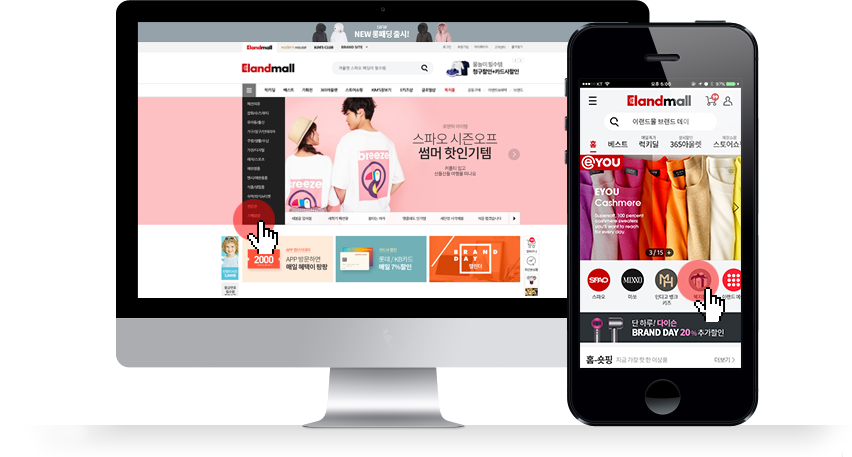
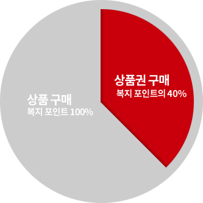

- HOME
- 고객센터

고객센터 이용안내
 1899-9500
오전9시~오후6시
1899-9500
오전9시~오후6시(주말/공휴일 휴무)
복지제도 안내
복지제도 소개
이랜드그룹에서는 임직원 개인이 자신의 라이프스타일 및 선호도에 따라 자유롭게 복리후생 내용을 선택하는 선진형 복지제도(Flexible Benefits Plan)를 실시하고 있습니다.
이랜드몰에서는 임직원 맞춤형 서비스를 위해 자사부터 특정까지 다양한 상품과 복지서비스를 제공하고 있으며, 취급 상품 및 서비스의 가격 경쟁력 확보를 위해 최선을 다하고 있습니다.
이랜드몰에서는 임직원 맞춤형 서비스를 위해 자사부터 특정까지 다양한 상품과 복지서비스를 제공하고 있으며, 취급 상품 및 서비스의 가격 경쟁력 확보를 위해 최선을 다하고 있습니다.
이랜드몰에서 제공하는 임직원 혜택
이랜드몰 내 모든 상품을 복지 포인트로 구매하실 수 있습니다.
또 임직원을 위한 특별 할인 코너인 <복지몰>을 신설해 PB부터 특정까지 다양한 상품을 더욱 저렴하게 구매하실 수 있습니다.
일반 카테고리에서 구매하실 경우 가격 차이가 발생할 수 있사오니, 먼저 <복지몰> 카테고리에서 가격 확인 후 구매하시기 바랍니다.
또 임직원을 위한 특별 할인 코너인 <복지몰>을 신설해 PB부터 특정까지 다양한 상품을 더욱 저렴하게 구매하실 수 있습니다.
일반 카테고리에서 구매하실 경우 가격 차이가 발생할 수 있사오니, 먼저 <복지몰> 카테고리에서 가격 확인 후 구매하시기 바랍니다.
복지몰 접속 방법
*임직원 인증 후 로그인하시면, 복지몰 카테고리를 확인하실 수 있습니다.

복지몰 접속 방법입니다.
사이드 메뉴에 진입하신 후, 전문관 메뉴 중 임직원 복지몰을 클릭하시면 접속 가능합니다.
Q. 임직원 이용방법
가입하신 이랜드몰 아이디로 임직원 인증 절차를 완료해 주십시오. 인증이 완료되면 복지 포인트로 이랜드몰 전 상품을 구매하실 수 있습니다.
Q. 임직원 인증 절차는 어떻게 되나요?
- ① PC로 이랜드몰 로그인 후, 계열사를 선택해주세요.
- ② 회사 아이디(@eland.co.kr 제외)와 비밀 번호를 입력해주세요.
- ③ 인증 버튼을 누르시면 인증이 완료됩니다.
임직원 인증 프로세스입니다.
- step1. 이랜드몰 로그인
- step2. 회사 선택 및 정보입력
- step3. 인증 완료
Q. 모바일에서도 임직원 복지 제도를 이용할 수 있나요?
네. PC와 동일하게 이랜드몰 모바일웹 또는 APP에서 이용하실 수 있습니다.
Q. 임직원을 위한 특별할인 상품이 있나요?
- - 임직원 할인 상품은 <복지몰> 코너에 별도로 게시하고 있습니다.
- - 임직원 특가 상품의 경우,타 카테고리 검색 후 구매하시면 일반 회원가로 적용되오니, 꼭 복지몰과 비교 후 구매 해 주십시오.
- - 상품군은 이랜드리테일 PB부터 특정 상품까지 시즌에 따라 변경될 수 있습니다.
Q. 복지 포인트 소진 후에는 복지몰 이용이 불가한가요?
아니요. 임직원이라면 다른 결제 방법으로도 복지몰 상품을 구매하실 수 있습니다.
복지몰을 포함해 이랜드몰 내 모든 상품을 복지 포인트로 구매하실 수 있습니다.
단, 상품권(이랜드리테일 / 상품권)은 복지 포인트의 40% 내에서만 구매하실 수 있습니다.

포인트 사용구성 설명입니다.
- 상품권
- 이랜드 상품권(지율 포인트의 40%)
- 지율 포인트의 40% 한도 내에서 이랜드 상품권을 구입 할 수 있습니다.
- 복지 포인트
- 복지 포인트(100%)
- 이랜드 임직원 복지 포인트로 상품을 자유롭게 구입할 수 있습니다.
* 이랜드리테일 상품권은 복지 포인트 외에 현금이나 카드로 추가 구매할 수 없습니다.
정책 FAQ(1) – 개인별로 부여되는 포인트는 몇 점인가요?
복지 포인트는 직급에 따라 상이하며, 상반기와 하반기로 나누어 각 50%씩 지급됩니다.
| 직급 | 기본포인트(연단위) | 직급포인트(연단위) | 합계 |
|---|---|---|---|
| 임원 | 전 임직원 공통 500,000 | 1,400,000 | 1,900,000 |
| 부장 | 700,000 | 1,200,000 | |
| 차장 | 600,000 | 1,100,000 | |
| 과장 | 500,000 | 1,000,000 | |
| 대리 | 300,000 | 800,000 | |
| 주임 | 200,000 | 700,000 | |
| 사원 | 100,000 | 600,000 | |
| 계약직 | 0 | 500,000 |
정책 FAQ(2) – 복지 포인트의 사용 기준 및 지급 원칙이 궁금합니다.
- 1. 지급 기준
- - 복지몰 오픈일 기준, 재직자에게만 포인트 부여
- 2. 사용 기준
- - 상반기, 하반기에 각 50%씩 지급
- - 상반기 미사용 포인트는 하반기로 이월
- - 하반기 미사용 포인트는 11월 30일 일괄 소멸 (해당년도에만 사용 가능하며 다음해 이월 불가)
- - 타인에게 양도 불가
- - 금전적으로 청구 불가
- 3. 신분 변동자 포인트 부여원칙
- - 적용법인간 이동 – 포인트 연계하여 사용 가능
- - 미적용 법인에서 적용 법인으로 이동/ 신규 입사 직원 – 발령일 기준으로 해당 반기에 일할 계산하여 지급(이랜드몰 임직원 인증 후 지급)
- - 적용 법인에서 미적용 법인으로 이동 / 퇴사자 – 발령일 기준으로 포인트 모두 소멸
- - 승진자, 정직원 전환자 – 승진 및 전환 인사발령일 기준으로 일할 계산하여 다음 반기에 지급(일괄 지급)
정책 FAQ(3) – 법정/기본 복리후생 제도는 어떻게 되나요?
※ 법정/기본 복리후생은 선택적 복리후생 제도와 별개로 계속 유지합니다.
-
임직원 복리후생
명절 선물 / 생일 선물 / 포상제도(사업부별 선택사항)
-
복지 포인트로 전환하여 운영합니다.
-
법정 복리후생
4대 보험 / 건강검진(기본)
기본 복리후생
경조금
-
법정 복리후생 및 기본 복리후생 제도는 종전과 동일하게
유지됩니다.
이랜드몰은 이랜드 임직원을 위해 다양한 상품을 합리적인 가격에 소개합니다. 복지 포인트 또는 기타 결제 방법을 통해 보다 편리하게 임직원 복지 혜택을 누려 보십시오.
결제 프로세스
*주문 및 결제내역은 ‘마이페이지’에서 확인이 가능합니다.
결제 프로세스에 대한 안내입니다.
- 상품 및 서비스 선택
- 예약 및 주문 신청
- 결제
- 배송 또는 서비스 이용
결제수단
- 1. 복지 포인트
- (1) 복지 포인트란 임직원 개인별로 배분된 복지 예산으로 이랜드몰에서 현금처럼 사용하실 수 있습니다.
- (2) 결제와 동시에 복지 포인트가 차감되므로, 별도의 차감 절차가 필요하지 않습니다.
복복지 포인트가 부족할 경우 일반 결제 수단(신용카드, 실시간 계좌이체, 무통장 입금 등)과 혼합하여 사용하실 수 있습니다.
- 2. 일반 결제
- (1) 결제 수단 : 신용카드 / 실시간 계좌이체 / 무통장 입금 / 카카오페이 / 페이코
- (2) 결제 방법 : 복지 포인트가 부족하거나 소진되었을 경우 일반 결제 수단을 통해 복지몰 및 이랜드몰 상품을 구매하실 수 있습니다.
복지몰은 임직원 특가 코너로 일반 결제로도 구매하실 수 있사오니, 적극 활용 부탁 드립니다.
이랜드리테일 포인트 적립
복지 포인트 사용시에도 이랜드리테일 포인트 적립이 가능합니다.
프로모션 및 쿠폰 할인
복지 포인트 결제 시, 타 프로모션 및 쿠폰과 중복 적용이 불가합니다.